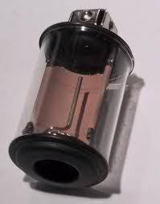
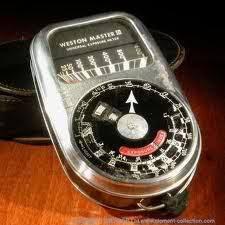
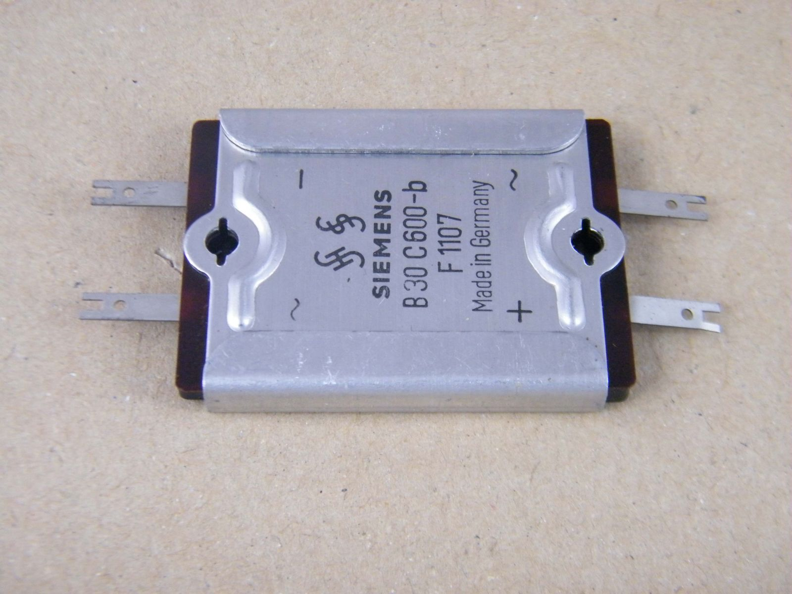

Perchè un post dedicato espressamente al selenio?
Perchè prossimamente descriverò l'estrazione di questo elemento da un prodotto commerciale (accettabilmente reperibile) con una bella e inedita procedura nella quale vedremo bene almeno un paio di forme allotropiche di questo elemento... ma non anticipiamo!
Due parole su questo elemento le dico, contravvenendo alla mia consueta regola di omettere quello che si può trovare in un attimo in rete.
Il selenio fu scoperto nel 1817 da quel gran chimico di Berzelius ed il suo nome deriva da una singolare analogia: nel 1782 M. von Reichstein aveva scoperto il tellurio, il quale fu poi studiato da M.H.Klaproth, che nel 1798 gli diede questo nome dal latino "tellus", terra.
Considerando l'analogia fra i due elementi, ragionò Berzelius, se il tellurio era la terra, il selenio sarà la luna! E così gli diede il nome che porta tutt'ora, prendendo spunto dal greco "Σελήνη", che vuol dire come tutti sanno, "luna".
Si presenta in vari stati allotropici.
Precipitandolo dalle sue soluzioni si presenta nells forma monoclina di selenio rosso. Fuso e raffreddato rapidamente si ottiene vetroso, fragile, nero, non conduttore; scaldato di trasforma, con sviluppo di calore, in selenio grigio o metallico, romboedrico, semiconduttore, che si ottiene anche lasciando raffreddare lentamente l'elemento fuso.
Il selenio rosso è solubile in solfuro di carbonio e dalle soluzioni può cristallizzare nelle due forme, alfa e beta.

Il selenio metallico al buio conduce poco la corrente elettrica, ma se illuminato la sua conducibilità aumenta di un migliaio di volte per effetto fotoelettrico; tale effetto è stato sfruttato fin nelle prime fotocellule che hanno permesso tra l'altro l'avvento del cinema sonoro.

Gli appassionati di fotografia meno giovani (chiamiamoli così...) ricorderanno il balletto che si doveva fare prima di ogni scatto tra la macchina fotografica e quell'aggeggio chiamato esposimetro, che forniva, grazie al selenio, la giusta esposizione su cui regolare manualmente tempi e diaframmi...

Col selenio (o meglio con i raddrizzatori che vediamo in figura) ci giocavo parecchi anni fa: allora avere a disposizione un cosino così piccolo che raddrizzava la corrente alternata di rete senza dover ricorrere alle valvole, era un lusso, un oggetto di alta tecnologia!
Ora, di questi tempi, mi son messo a giocare addirittura col selenio come 34° elemento della Tavola Periodica: la prossima volta lo farò in concreto.